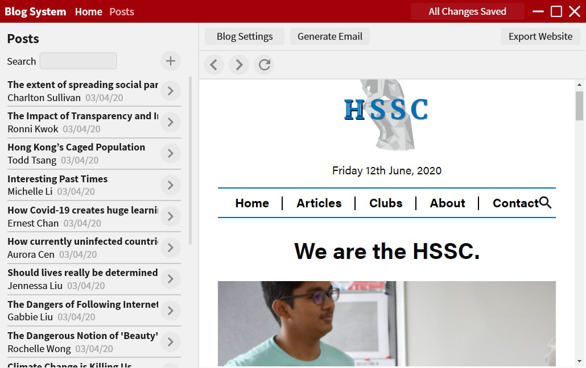

Made in: March 2017
At age: 13
FlyLive was the only tool of its kind available publicly at the time. It allows flight simulator livestreamers to extract data from the flight simulator and display it on their stream through the use of constantly-updating text files and OBS. This software is still used by streamers to this day.

Made in: December 2017
At age: 14
FlyChrono is a time syncer for flight simulators. It syncs the simulator's time with the real-world time. Other solutions existed but FlyChrono was the only free solution. A significant portion of the flight simulator users have this installed.
Made in: December 2017
At age: 14
FlyCentral serves as the hub for all of my software. One can install and manage all of my software from it.
Made in: December 2018
At age: 15
FlyLive Studio was both a breakthrough for my programming skill and the streaming community. It allows people to have even richer overlays than before thanks to FlyLive Studio's built-in overlay editor. The nature of the overlay editor also provided much faster data update rates (up to 20 times a second, as opposed to once per second before). It also includes a chatbot built using the Twitch API. This software has helped streamers with over 30K followers build their brand and ultimately their lives.

Made in: November 2019
At age: 16
A student organisation approached me, asking me to make a "word of the day" widget for them. In many ways, this widget was my introduction to web-app design. The widget would draw data from a Google Sheet using the Google API to display a "word of the day" on the client-side. This was my first time working with cloud hosting.

Made in: April 2020
At age: 16
A student organisation in my school required a website which would allow them to post their articles online. They approached me and asked me to make a blog system. The making of this system extended my already strong app-design skills and was my first time designing a native desktop app for a specific client.

Made in: April 2020
At age: 16
Using my now complete blog system, I designed websites for the HSSC and the ISSIA (two student organisations, one of which is international). This greatly strengthened my previously loose web design skills.